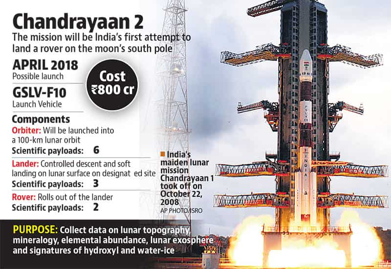
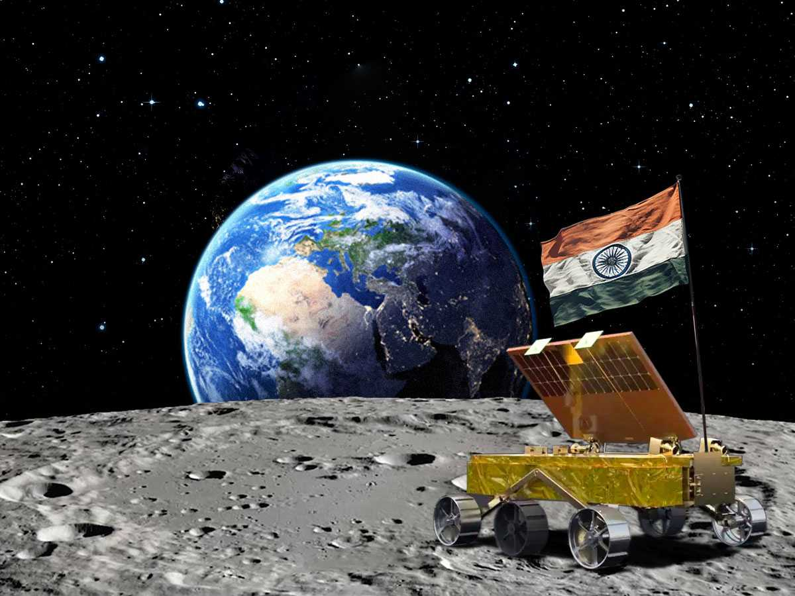
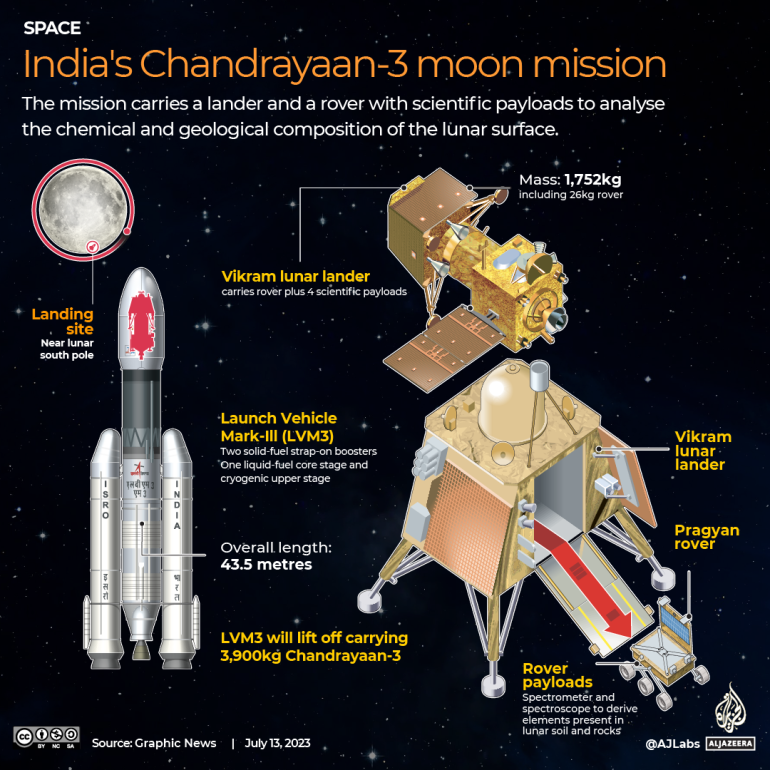
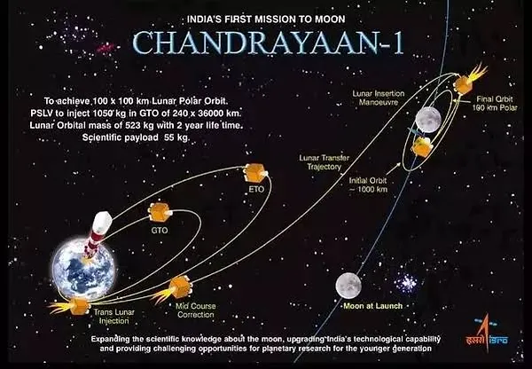
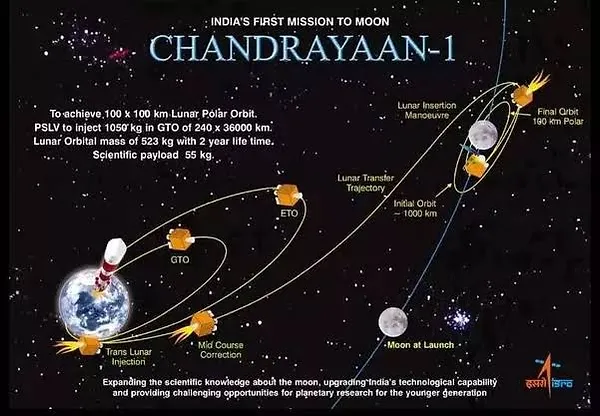
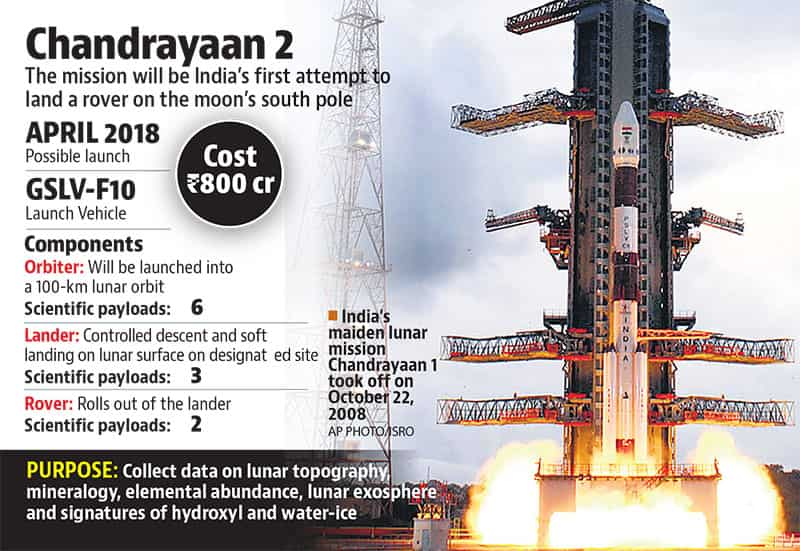
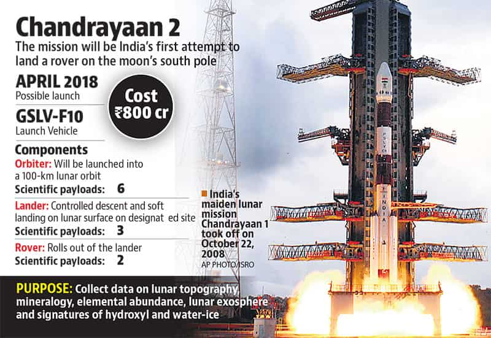

The Prime Minister of India Atal Bihari Vajpayee announced the Chandrayaan 1 project. The mission was a major boost to India's space program. The idea of an Indian scientific mission to the Moon was first raised in 1999 during a meeting of the Indian Academy of Sciences. The (ASI) carried forward the idea in 2000. Soon after, the (ISRO) set up the National Lunar Mission Task Force which concluded that ISRO has the technical expertise to carry out an Indian mission to the Moon. In April 2003 over 100 famous and respected Indian scientists in the fields of planetary and space sciences, Earth sciences, physics, chemistry, astronomy, astrophysics, engineering and communication sciences discussed and approved the Task Force recommendation to launch an Indian probe to the Moon. Six months later, in November, the Vajpayee government gave approval for the mission.
Chandrayaan's NASA Instrument Moon Mineralogy Mapper has confirmed the magma ocean hypothesis, meaning that the Moon was once completely molten. The terrain mapping camera on board Chandrayaan-1, besides producing more than 70,000 three dimensional images, has recorded images of the landing site of U.S. spacecraft Apollo 15. TMC and HySI payloads of ISRO have covered about 70% of the lunar surface, while M3 covered more than 95% of the same and SIR-2 has provided high-resolution spectral data on the mineralogy of the Moon. Indian Space Research Organisation said interesting data on lunar polar areas was provided by Lunar Laser Ranging Instrument (LLRI) and High Energy X-ray Spectrometer (HEX) of ISRO as well as Miniature Synthetic Aperture Radar (Mini-SAR) of the US. LLRI covered both the lunar poles and additional lunar regions of interest, HEX made about 200 orbits over the lunar poles and Mini-SAR provided complete coverage of both North and South Polar Regions of the Moon.
As the star tracking system overheated and malfunctioned due to radiation from the sun, it paved the way for Chandrayaan-1 to its premature end. As the thermal shielding of Chandrayaan-1 failed, it didn't protect the spacecraft from the heat of the sun.
Chandrayaan-2

Chandra, "Moon" and yāna, "vehicle", is the second lunar exploration mission developed by the (ISRO), after Chandrayaan-1. It consists of a lunar orbiter, and formerly included the Vikram lander and the Pragyan rover, all of which were developed in India. The main scientific objective is to map and study the variations in lunar surface composition, as well as the location and abundance of lunar water. The spacecraft was launched from the second launch pad at the Satish Dhawan Space Centre in Andhra Pradesh on 22 July 2019 at 09:13:12 UTC by a LVM3-M1 rocket. The craft reached the lunar orbit on 20 August 2019 and began orbital positioning manoeuvres for the landing of the Vikram lander. The lander and the rover were scheduled to land on the near side of the Moon, in the south polar region at a latitude of about 70° south on 6 September 2019. However, the lander crashed when it deviated from its intended trajectory while attempting to land on 6 September 2019. According to a failure analysis report submitted to ISRO, the crash was caused by a software glitch.
On 12 November 2007, representatives of the Roscosmos and ISRO signed an agreement for the two agencies to work together on the Chandrayaan-1's follow-up project, Chandrayaan-2.ISRO would have the prime responsibility for the orbiter, rover and the launch by GSLV, while Roscosmos was to provide the lander. The Indian government approved the mission in a meeting of the Union Cabinet, held on 18 September 2008 and chaired by Prime Minister Manmohan Singh. The design of the spacecraft was completed in August 2009, with scientists of both countries conducting a joint review. Although ISRO finalised the payload for Chandrayaan-2 on schedule, the mission was postponed in January 2013 and rescheduled to 2016 because Russia was unable to develop the lander on time.
Former ISRO Chairman K Sivan has revealed that a small error during the Chandrayaan-2 mission in 2019 led to its failure. However, he expressed satisfaction that the error was identified and corrected, leading to the successful landing of the Chandrayaan-3 lander on the lunar South Pole.
Vikram


Chandrayaan-3 is the third mission in the Chandrayaan programme, a series of lunar-exploration missions developed by the Indian Space Research Organisation (ISRO).Launched on 14 July 2023, the mission consists of a lunar lander named Vikram and a lunar rover named Pragyan, similar to those launched aboard Chandrayaan-2 in 2019. Chandrayaan-3 was launched from Satish Dhawan Space Centre on 14 July 2023. The spacecraft entered lunar orbit on 5 August, and the lander touched down near the lunar south polar region[8] on 23 August at 12:33 UTC, making India the fourth country to successfully land on the Moon, and the first to do so near the region of the lunar south pole. On 3 September the lander hopped and repositioned itself 30 cm (12 in)-40 cm (16 in) from its landing site.Vikram lander and Pragyan rover were set to sleep on 2 September and 4 September respectively due to depleting solar power with the Sunset on Lunar South Pole, it is being hoped that the Lander and Rover will again start working on the sunrise at the Lunar South pole, on September 22.
Chandrayaan-3 (CH-3) is currently on an ambitious journey to reach the moon, with the objective of achieving a soft landing, exploring the lunar surface, and collecting invaluable scientific data. This mission is a technological challenge undertaken by India, led by ISRO.
 

 
